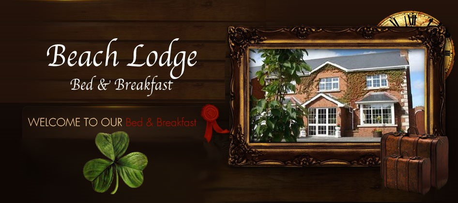

Beach Lodge

15 Golf Links Road , Bettystown, Co. Meath
Tel: 041 988 7866
Email: beachlodge@eircom.net
. Family run B & B, spacious, modern, finished and decorated to a very high standard. Within a few minutes walk to beach and golf links club and convenient to Dublin Airport and City - Boyne Valley & Newgrange.